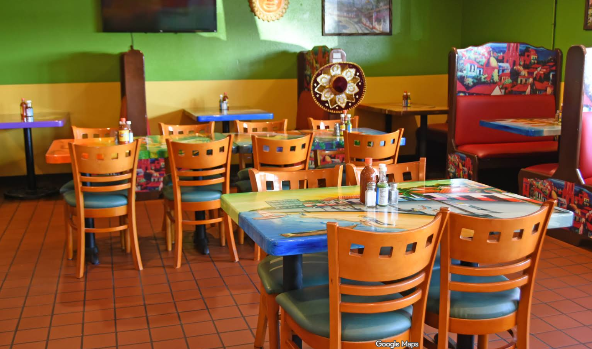
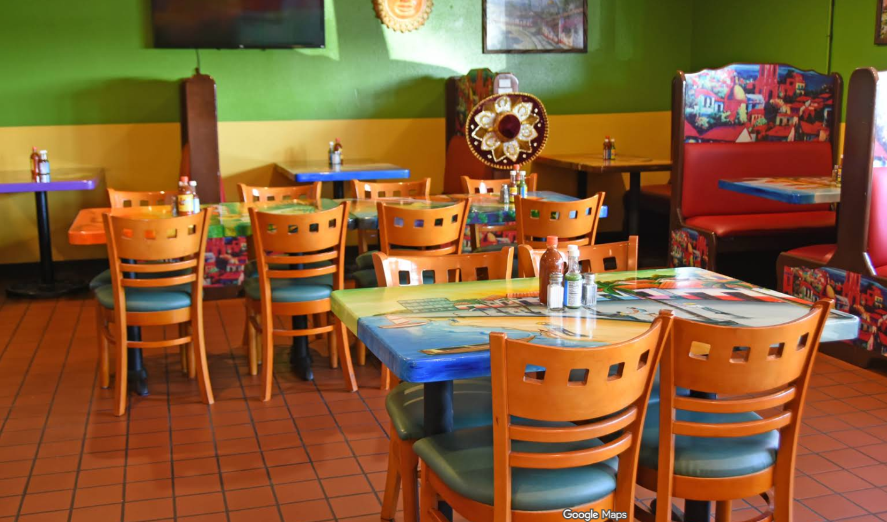

About Us
Our Story
El Patrón was founded with a clear vision: to bring the true essence of authentic Mexican cuisine to New London. Every dish is carefully crafted to honor family traditions and flavors passed down from generation to generation.
What began as a small family-owned restaurant grew through dedication, hard work, and the loyalty of our customers. Today, we remain committed to quality, service, and celebrating Mexican culture through food.
 
